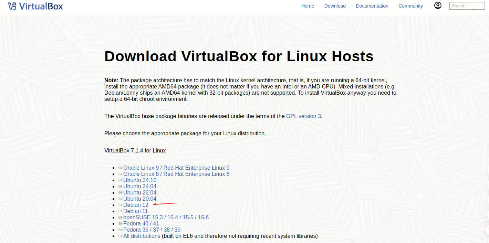
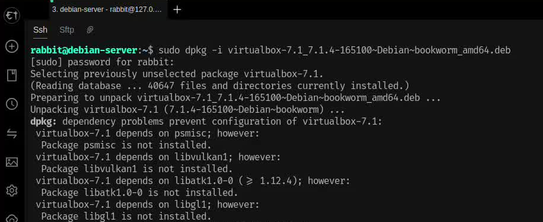
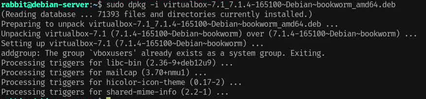
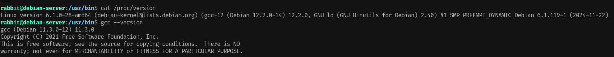
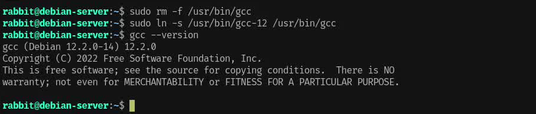

操作系统：debian 12
官网：https://www.virtualbox.org/
在官网上找到下载入口，选择对应的操作系统版本：

点击下载，virtualbox的deb文件将会被下载到你的计算机上。
因为下载下来的是virtualbox的deb文件，因此需要通过dpkg命令来安装virtualbox。
1sudo dpkg -i virtualbox-7.1_7.1.4-165100~Debian~bookworm_amd64.deb第一次执行dpkg命令会安装失败，因为virtualbox的配置需要依赖其它的一些软件包，而这些软件包还没有被安装。

因此，我们需要执行下面的apt命令来修复依赖关系：
xxxxxxxxxx41# 更新软件包列表，确保下载最新的软件包，以避免依赖问题2sudo apt update3# 同 sudo apt install -f，修复依赖关系，下载并配置virtualbox需要的软件包，并重新安装配置virtualbox4sudo apt --fix-broken install这一次还是安装失败，报错信息如下：
x1This system is currently not set up to build kernel modules.2Please install the gcc make perl packages from your distribution.3Please install the Linux kernel "header" files matching the current kernel4for adding new hardware support to the system.5The distribution packages containing the headers are probably:6 linux-headers-amd64 linux-headers-6.1.0-28-amd647This system is currently not set up to build kernel modules.8Please install the gcc make perl packages from your distribution.9Please install the Linux kernel "header" files matching the current kernel10for adding new hardware support to the system.11The distribution packages containing the headers are probably:12 linux-headers-amd64 linux-headers-6.1.0-28-amd6413
14There were problems setting up VirtualBox. To re-start the set-up process, run15 /sbin/vboxconfig16as root. If your system is using EFI Secure Boot you may need to sign the17kernel modules (vboxdrv, vboxnetflt, vboxnetadp, vboxpci) before you can load18them. Please see your Linux system's documentation for more information.19Setting up at-spi2-core (2.46.0-5) ...20Processing triggers for libc-bin (2.36-9+deb12u9) ...virtualbox需要构建内核模块以支持虚拟化，但是系统此时缺少编译内核模块所需的工具和头文件，因此需要下载/安装
编译工具
gcc (GNU编译器集合)、make (构建工具)、perl (脚本语言)
内核头文件
系统中没有与当前运行内核版本匹配的内核头文件
执行下面命令下载所需要的编译/构建工具和内核头文件
xxxxxxxxxx11sudo apt install build-essential linux-headers-$(uname -r)这次安装成功

当然，如果你的计算机上原本就安装了gcc，那么这一步还可能失败，因为virtualbox构建内核模块实现虚拟化，需要使用合适版本的gcc编译器，最好是和Linux内核编译器版本相同 (build-essential包里面的gcc版本和Linux内核编译器版本相同)。
xxxxxxxxxx41# 查看当前Linux内核gcc版本2cat /proc/version3# 查看当前gcc版本4gcc --version
可以执行下面命令选择你想使用的gcc编译器：
xxxxxxxxxx41# 删除原本指向gcc-11的软链接2sudo rm -f /usr/bin/gcc3# 新建软链接，指向gcc-124sudo ln -s /usr/bin/gcc-12 /usr/bin/gcc
如果修改了gcc版本后还是安装失败，可能需要先卸载virtualbox，再重新安装virtualbox
xxxxxxxxxx21sudo dpkg -r virtualbox-7.12sudo dpkg -i virtualbox-7.1_7.1.4-165100~Debian~bookworm_amd64.deb在ubuntu22.04/ubuntu24.04上安装virtualbox，和在debian上的步骤是一样的，可能遇到的问题和解决方法也是一样的，亦可参考此文！